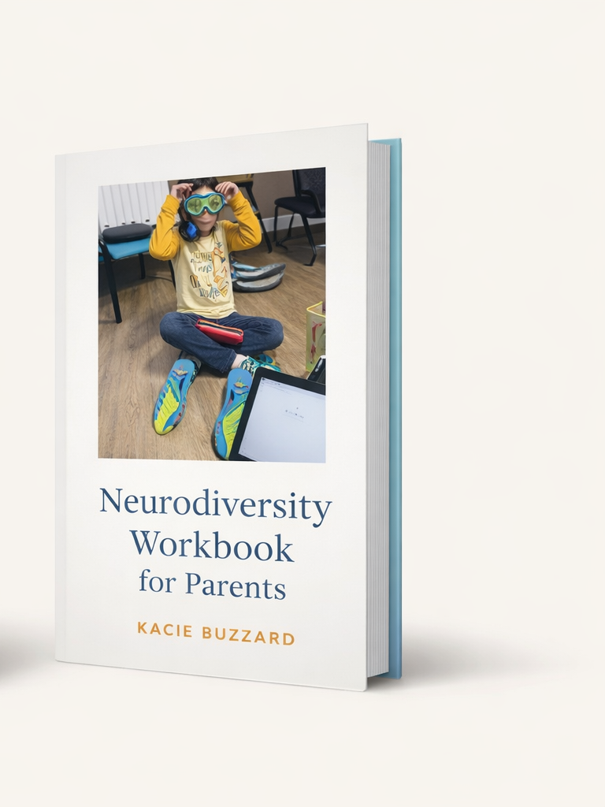

Neurodiversity Workbook for Parents
A practical guide helping families navigate neurodiversity and advocacy.
View on Amazon →
Keynotes and strategy that turn empathy into action—without the performative stuff.
I help organizations move beyond performative empathy into systems that actually support people.
Kacie Wielgus (Buzzard) is a speaker, writer, and inclusion consultant whose work lives at the intersection of lived experience and systems change.
Her talks and partnerships translate complexity into clarity—so teams can build policies, programs, and communication that hold up in real life.

A practical guide helping families navigate neurodiversity and advocacy.
View on Amazon →
A collaborative collection sharing lived experiences and advocacy journeys.
View on Amazon →Email: kacie.buzzard@gmail.com
LinkedIn: linkedin.com/in/kwbuzzard